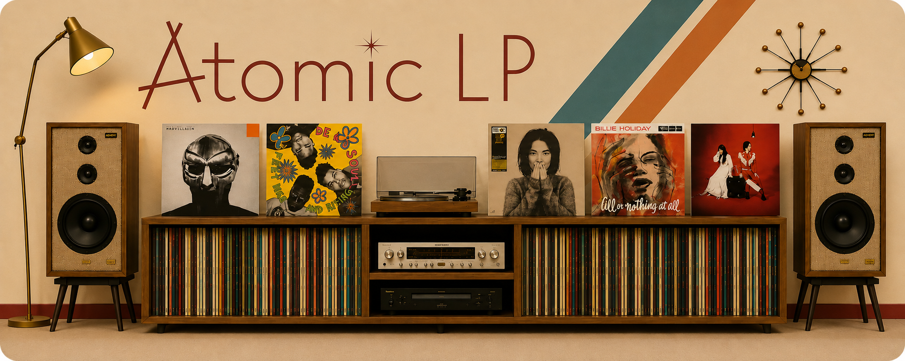

Flexible Search Inputs
Search can begin from barcode, catalog ID, artist + album, artist-only input, or partial identifying information from a physical record.
Software Development, Data & AI Projects

2026–PRESENT · INDEPENDENT DEVELOPMENT
A working full-stack application for vinyl identification, release resolution, multi-service orchestration, persistence, and connected-account workflows.
Atomic LP Scanner is a full-stack web application built to make the process of identifying a physical record and narrowing it to the most useful vinyl release information faster. A search can start from a barcode, catalog number, artist, album, or a combination of those inputs.
PROJECT OVERVIEW
Vinyl research often starts with incomplete or inconsistent evidence: a barcode, catalog number, partial artist or album text, or packaging that does not uniquely identify a pressing. Atomic LP Scanner turns those imperfect inputs into a structured identification workflow rather than treating the problem as a simple API lookup.
The application coordinates multiple music-data services, builds and ranks candidate album identities, presents Possible Matches when the evidence is ambiguous, and continues into vinyl-release research only after an album identity is sufficiently clear or explicitly selected by the user.
IDENTITY RESOLUTION
Search can begin from barcode, catalog ID, artist + album, artist-only input, or partial identifying information from a physical record.
When more than one album identity is plausible, the application surfaces candidates with supporting metadata instead of forcing a weak automatic choice.
Candidate ranking uses the available identifying evidence so clearer matches can advance automatically while ambiguous results remain under user control.
Once an album identity is selected, the workflow moves from album-level identity to Discogs Master and vinyl Release information for pressing research.
APPLICATION ARCHITECTURE
The backend is built with Python and Flask, with PostgreSQL and SQLAlchemy for persistent application data. The browser interface uses JavaScript, HTML, and CSS to coordinate the interactive search state. Discogs is the primary catalog and release source, while MusicBrainz and supporting services provide alternate discovery, artwork, external links, and additional context.
The application treats those providers as separate workflows rather than a single chained request. That makes it possible to handle slow responses, provider limits, alternate discovery paths, partial results, and failures without collapsing the entire search.
Key Tools: Python, Flask, JavaScript, PostgreSQL, SQLAlchemy, REST APIs, JSON, Discogs, MusicBrainz, OAuth, pytest, Gunicorn, Render.
STATE & RELIABILITY
New searches, STOP, and CLEAR ALL supersede earlier work so late responses cannot overwrite the record the user is currently researching.
Provider workflows are allowed to complete independently, so useful results can still be shown when one external dependency is slow or unavailable.
Discogs usage is treated as a constrained resource, with workflow behavior designed around provider limits instead of assuming unlimited request capacity.
Development includes performance tracing and workflow logging to identify slow provider calls, long-running paths, and regressions in real search behavior.
AUTHENTICATION & PERSISTENCE
Atomic LP Scanner has its own application account system for registration, login, password changes, password recovery, and persistent user data. External services are connected separately rather than being used as the application's primary identity.
Discogs account access is authorized through OAuth only when a user wants Collection or WantList features. Provider credentials are stored encrypted on the server and are kept separate from browser code and from the public album-search workflow.
The authentication implementation is organized as reusable provider-neutral account and OAuth infrastructure, with Discogs-specific behavior isolated from the common authentication layer.
TESTING
Endpoint tests exercise routes, query forwarding, persistence APIs, error responses, and security behavior with controlled provider substitutes.
Backend tests cover request parsing, provider workflows, payload normalization, retries, URL construction, and session lifecycle behavior.
Rendered-template, CSS, and executable JavaScript tests verify DOM structure, presentation contracts, and client-side workflow behavior.
Previously observed search and workflow failures are retained as regression cases so fixes become part of the application's permanent validation set.
DEPLOYMENT
Atomic LP Scanner is developed as a conventional Flask application, versioned in Git, tested locally, and deployed as a hosted web application using Gunicorn and Render with PostgreSQL-backed persistence. The live deployment provides a practical environment for validating authentication, provider integrations, browser behavior, performance, and regression fixes against real usage.
Source repository: Private.
WALKTHROUGHS
Short animated walkthroughs will be added here for the three primary workflows.
Start with a barcode, catalog number, artist, or album and follow the search through album identification and Possible Matches when needed.
Move from the identified album to vinyl releases, inspect release details, narrow the results, and review marketplace information.
Connect a Discogs account, compare search results with personal library data, and save useful release candidates for later.